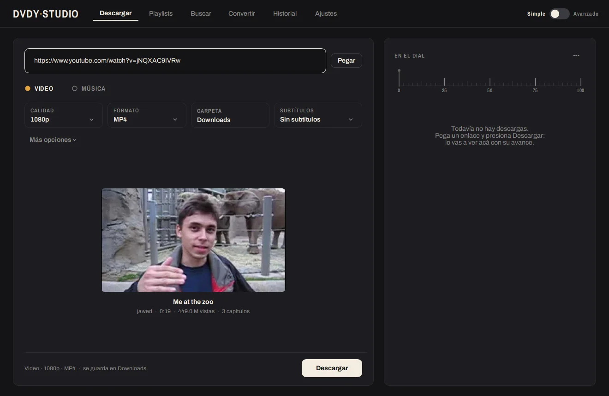
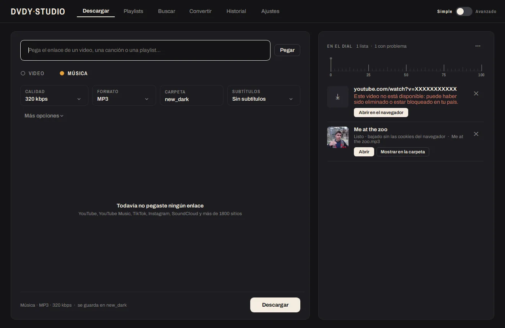

Tu música y tus videos,
para guardar.
Pega un enlace de YouTube o de más de 1800 sitios, elige video o música y listo. DVDY Studio baja el archivo con su carátula y su nombre, y te lo deja a mano para abrir.
Versión más reciente · Gratis · Windows 10 y 11 · Sin instalar Python
-
Me at the zoo Bajando 0 % AbrirMostrar en la carpeta
-
Clase de guitarra · parte 2En espera
-
Mi playlist para el autoListo · 18 canciones
Tres pasos, sin vueltas
-
1
Pega el enlace
El programa lo reconoce solo y te muestra la carátula, el título y la duración antes de bajar nada.
-
2
Elige video o música
Como cambiar de AM a FM. La calidad, el formato y la carpeta vienen bien elegidos; si quieres, los cambias.
-
3
Ábrelo
Cuando termina, el archivo aparece con su nombre y un botón para abrirlo o verlo en la carpeta.

Todo en un solo programa
Descargar, convertir y editar, sin abrir la consola ni instalar nada más.
Videos, música y playlists
De 144p a 8K, en MP4 o MP3 y otros formatos. Las playlists se ven como una grilla de carátulas y eliges las canciones con un clic. Guarda título, artista y carátula dentro del archivo.
Convierte lo que ya tienes
Pasa un video a MP3, achica un archivo o cambia de formato. Arrastra varios a la vez y elige «Convertir a…». Sin opciones técnicas, salvo que las quieras.
22 herramientas de edición
Recortar, unir, comprimir a un tamaño, crear GIF, normalizar el volumen, quitar silencios, agregar subtítulos o una carátula. Todo con FFmpeg por dentro.
Simple o avanzado, tú eliges
El modo Simple muestra lo esencial. El Avanzado suma la tabla de formatos, subtítulos, SponsorBlock, capítulos, fragmentos y nombres de archivo a medida.

Pensado para que funcione a la primera
- Se instala solo lo que falta
- Si tu PC no tiene FFmpeg o Deno, el programa ofrece bajarlos con un clic. Sin permisos de administrador.
- Errores que se entienden
- Si un video es privado o fue eliminado, te lo dice en español y te propone qué hacer.
- Se actualiza solo
- Cuando sale una versión nueva, te avisa con las novedades. Un clic y listo.
- Gratis y abierto
- Sin anuncios, sin cuentas y sin rastreo. El código está en GitHub.
Preguntas frecuentes
¿Necesito instalar Python u otra cosa?
No. En Windows descomprimes el zip y abres DVDY Studio.exe. En Ubuntu abres el archivo .deb con un doble clic y lo instalas; después aparece en tus aplicaciones. Si faltan FFmpeg o Deno, el programa te ofrece bajarlos solo.
Windows dice que la app es «desconocida». ¿Es seguro?
Aparece porque el programa no tiene una firma digital paga. Pulsa Más información → Ejecutar de todas formas. El código completo es público en GitHub.
¿Funciona en Mac, Linux o el celular?
Funciona en Windows 10 y 11, y en Ubuntu 22.04 o posterior (también en Linux Mint, Pop!_OS y otros sistemas basados en Ubuntu), siempre de 64 bits. Por ahora no hay versión para Mac ni para el celular.
¿De qué sitios puedo bajar?
YouTube, YouTube Music, TikTok, Instagram, SoundCloud y más de 1800 sitios compatibles con yt-dlp. Usa la herramienta solo con contenido que tengas derecho a descargar.
Bájalo y pruébalo
Un zip de unos 60 MB. Lo descomprimes donde quieras y abres DVDY Studio.exe.
Versión más reciente en GitHub
Requiere Windows 10 u 11 de 64 bits.